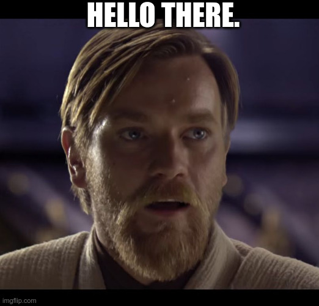

In what concerns the continuous evaluation solving exercises grade during the semester, you should submit until 23:59 of
(this exercise will still be available for submission after that deadline, but without couting towards your grade)
[to understand the context of this problem, you should read the class #01 exercise sheet]

Everyone knows that "Hello there." is how Obi-Wan Kenobi introduces himself. Can you help him do this in Python?Write a program that prints the message "Hello there."
For this problem there is no input you need to read.
The output should be a single line containing "Hello there." (without the quotes).
| Example Output |
|---|
Hello there. |
Content by Pedro Ribeiro and Bernardo Portela (DCC/FCUP), migrated from dcc.fc.up.pt/~pribeiro/aulas/ip2526/problems/ip001.html.